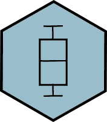

HRT Atlas: Database of housekeeping genes and reference transcripts
Tool to search human and mouse
housekeeping and candidate reference genes/transcripts.
It also offers tissue and cell selective candidate reference transcripts and some primers for
quantitative PCR
normalization.
Click on Human or Mouse icon to display their search boxes. Learn more

|  | Alternatively, you can visualize the expression of individual Human or Mouse candidate reference transcripts and housekeeping genes/transcripts, and potential modifiers of its expression. |
Please acknowledge Housekeeping and Reference Transcript Atlas in your publications by citing the
following reference:
HRT Atlas v1.0 database: redefining human and mouse housekeeping genes and candidate reference transcripts by mining massive RNA-seq datasets
Bidossessi Wilfried Hounkpe, Francine Chenou, Franciele de Lima, Erich Vinicius De Paula
Nucleic Acids Research, gkaa609, doi: https://doi.org/10.1093/nar/gkaa609
HRT Atlas v1.0 database: redefining human and mouse housekeeping genes and candidate reference transcripts by mining massive RNA-seq datasets
Bidossessi Wilfried Hounkpe, Francine Chenou, Franciele de Lima, Erich Vinicius De Paula
Nucleic Acids Research, gkaa609, doi: https://doi.org/10.1093/nar/gkaa609